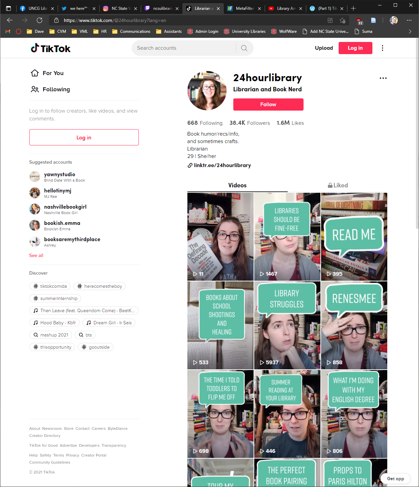

TikTok
Overview
One of the newest players in the social media landscape, TikTok is built on sharing short video clips, often with prerecorded background music. One innovative feature allows users to “duet” with another user’s video, with the two videos played side-by-side. Trends sweep through TikTok quickly, with choreographed “dance challenges” being particularly popular with the site’s predominantly young userbase.
Strengths & Weaknesses
The potential with TikTok is great - an active and engaging TikTok presence is an ideal way to connect with younger, hipper patrons - but it represents a new type of content that reserved and professional librarians and library staff may not be comfortable with. In addition, TikTok indeed offers a way for your library to broadcast your message to your community, but the possibilities for interaction are limited. Don’t underestimate the viral power of a good duet, however.
Recommendations
Libraries and librarians should explore TikTok and familiarize themselves with it. Producing compelling TikTok content is challenging, especially for people who are not avid users of the app, but it can provide an ideal way to demonstrate the lighter side of your library and develop a unique and approachable personality.
What can we learn?
As librarians know, learning a new skill is always beneficial, and stepping outside your comfort zone opens up new horizons. Staying current in your knowledge of social networking is essential, and TikTok appears to be a rising star in the constellation of social media. The fun and casual environment of TikTok offers an ideal way to shatter stereotypes about buttoned-down, severe librarians.